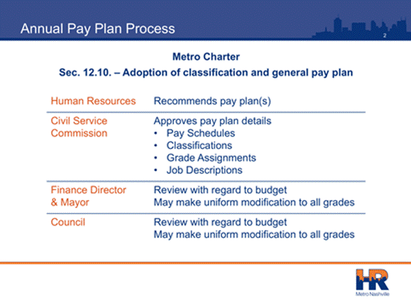
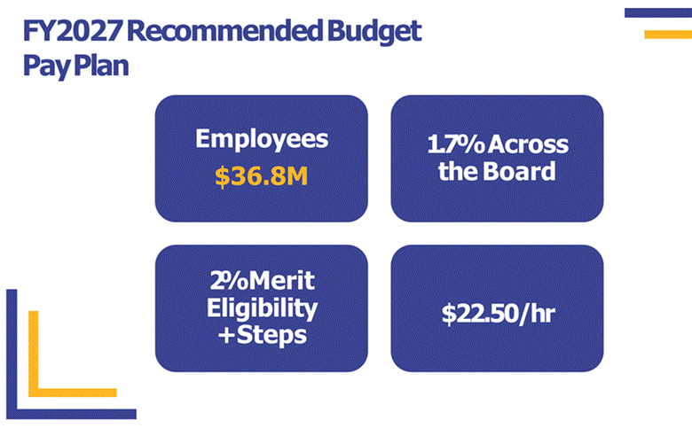
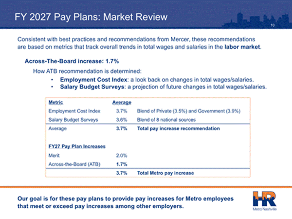
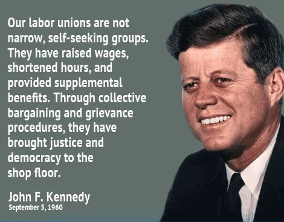
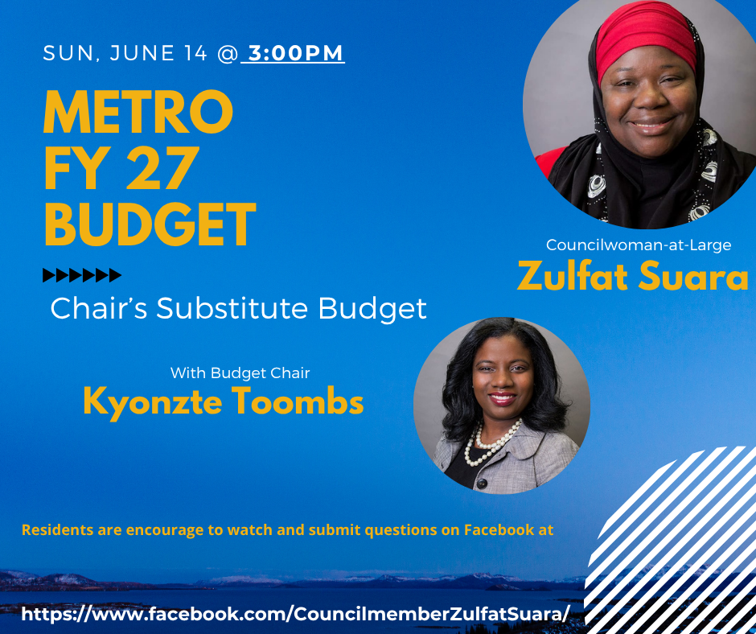

FY27 Budget Conversations with Union Leaders
Nashville runs on the dedication of public servants — the teachers who shape our children’s futures, the first responders who protect our neighborhoods, the workers who maintain our infrastructure, and the caregivers who support our most vulnerable residents. The FY27 Metro budget brings their contributions into sharp focus once again, revealing both the progress we’ve made and the challenges that continue to undermine the stability of our workforce.
This year’s June 7 budget conversation brought together leaders from the Civil Service Commission, SEIU, the Employee Benefits Board, and Local 140 Firefighters to unpack how Metro’s pay plan affects the people who keep our city functioning. Their discussion illuminated a central truth: compensation is not just a line item — it is a reflection of our values.
From the 1.7% COLA to rising insurance premiums to long‑term structural changes in step progression, the FY27 budget forces us to confront a difficult question: Are we truly investing in the people who make Nashville work?
Meet the Panelist
The discussion brought together key leaders involved in Metro’s compensation and benefits systems:
- Ethan Link– Business Manager for LIUNA local 386. He also serves on the Metro Civil Service Commission
- Jessica Stewart, President SEIU Local 205
- Jonathan Puckett, Chair of the Metro Employees Benefits Board and a Suppression Rep. with IIAF Local 140 Firefighters.
- Mark Young, Former president of IIAF Local 140. He is the Fire Department coucil liason
What Is the Civil Service Commission?
The Civil Service Commission is an independent body responsible for ensuring fairness in Metro’s employment practices. It oversees job classifications, pay structures, and compensation policies for Metro employees. Commissioners are appointed to five‑year terms and operate outside political influence.
The Commission’s process is rooted in market competitiveness. Each year, it reviews compensation data — including the Mercer study — to determine what Metro must offer to remain competitive with surrounding municipalities and similar employers. The Commission does not base its recommendations on Metro’s available revenue; its mandate is fairness and competitiveness.

What Is SEIU and Who Does It Represent?
The Service Employees International Union (SEIU) represents thousands of public‑sector workers across Tennessee, including:
- Metro general government employees
- MNPS support staff
- NES workers
- General Hospital employees
SEIU advocates for fair wages, safe working conditions, and transparent compensation practices. In this year’s budget cycle, SEIU members demonstrated extraordinary solidarity by prioritizing funding for General Hospital employees — even when it meant accepting less for themselves.
What is the IIAF and Who Does it Represent?
The International Association of Fire Fighters (IAFF) Local 140, which represents the professional fire fighters and emergency medical service personnel of the Nashville Fire Department, has an estimated membership of approximately 1,000 to 1,300 active and retired members
What is in the Mayor’s FY 27 Budget Pay Plan?
The mayor’s proposed budget includes:
- Across-the-board pay increases
- Merit and step adjustments
- Wage adjustments
- Increased minimum wage for entry level positions to $22.50/hr
FY27 pay plan includes:
- 1.7% Accrosse Board (Also referred to as Cost‑of‑Living Adjustment (COLA)
- 2% merit increase for eligible employees

Discussion and Analysis: Unpacking the Numbers
How the 1.7% COLA Was Calculated
A major point of concern in this year’s budget is the 1.7% cost‑of‑living adjustment (COLA). During the June 7 discussion, Ethan from the Civil Service Commission explained how the number was determined — and why it falls short of what Metro employees need.
The Commission began with a 3.7% market target, based on Mercer’s compensation study comparing Metro’s pay to similar employers. That 3.7% represents what employees would need to stay competitive in the labor market.
However, because Metro employees also receive a 2% merit increase, the Commission subtracted that amount from the 3.7% target, resulting in the 1.7% COLA.
While the math is straightforward, the logic is flawed. As Jessica from SEIU emphasized, the 2% merit increase is not a cost‑of‑living adjustment — it is a built‑in part of the compensation structure promised to employees when they were hired. Treating it as part of COLA artificially suppresses wage growth.

SEIU’s Solidarity Budget Approach
One of the most striking moments in the discussion came from Jessica’s explanation of SEIU’s solidarity budget approach. Rather than requesting additional funds beyond what the Civil Service Commission allocated, SEIU members chose to accept the Commission’s recommendation and direct any additional resources toward fully funding General Hospital.
This decision was driven by a history of unfulfilled promises to hospital employees. SEIU members chose to prioritize those workers, even if it meant receiving less themselves. Their approach reflects a rare level of collective sacrifice and solidarity in budget negotiations.
Union members made clear that this was not simply a financial decision — it was a statement of values. Their willingness to put community needs first underscores the importance of ensuring General Hospital receives the funding it has long been promised.
Rising Insurance Premiums: The Hidden Pay Cut
Jonathan from the Employee Benefits Board delivered one of the most concerning updates: health insurance premiums will increase by 16.8% overall, with family coverage rising by more than $100 per month.
For many employees, this increase completely erases the value of the 1.7% COLA. For example:
- A $50,000 salary receives a 1.7% COLA = $850/year (about $70/month before taxes)
- Family insurance premiums increase by $100+/month
Even before taxes, the employee is losing money. After taxes, the loss is even greater.
This disconnect stems from the fact that the Civil Service Commission and the Benefits Board operate independently. One sets pay; the other sets benefit costs. Without coordination, employees can receive a “raise” that results in a net pay cut.
Problems with the New COLA Formula
Mark Young from Local 140 raised additional concerns about structural changes to Metro’s compensation system:
- The top‑out period increased from 10 years to 15 years
- Step increases were reduced from 3% to 2%
These changes significantly alter long‑term earning potential. Employees now take 50% longer to reach the top of their pay range, with much smaller increases along the way. For new employees considering a career with Metro, this makes the city less competitive. For current employees, it represents a major shift from the expectations they were hired under.
Questions
Why isn’t the 2% merit increase considered part of the raise?
The panelist were adamant that the 2% should not be considered when discussing cost of living adjustments. According to them, the 2% merit increase is:
- The merit increase is not optional; it is part of the job’s compensation structure.
- A promised step increase employees receive based on longevity, not inflation
- Part of the existing pay plan, A step increase employees receive as they move through the pay plan
- Something employees would receive even if inflation were zero
- Not designed to offset rising housing, childcare, food, or transportation costs
In other words: The 2% is a step. The 1.7% is the only true COLA.
Is Metro Still Competitive with Other Cities?
According to our union leaders, the short answer is no.
The panelist shared that if the Mercer study recommended a 3.7% increase to maintain market competitiveness and Metro is delivering 1.7% (before factoring in rising benefit costs), that Metro will loss it competitive edge against neighboring counties.
Falling behind surrounding counties and municipalities means:
- Higher turnover
- Difficulty recruiting qualified staff
- Reduced service quality
How can Metro improve employee pay and benefits without raising taxes or cutting services?
Several panelists emphasized that Metro’s budget challenges are not just about revenue — they are about priorities.
- Ethan stressed that the Commission’s job is to recommend competitive wages — but Metro must choose to fund those recommendations.
- The panelist noted that Metro continues to offer tax breaks and incentives to large corporations, even as frontline workers struggle to afford rising housing and healthcare costs.
Their shared message: Metro cannot say it lacks resources for employees while continuing to subsidize major corporations.
Redirecting even a portion of these incentives would allow Metro to strengthen pay and benefits without raising taxes.

Current Initiatives and Steps Forward
Despite the challenges identified, the June 7 conversation produced several concrete commitments to improve coordination, transparency, and long‑term planning.
The Case for Multi‑Year Pay Plans
Ethan emphasized the need to return to multi‑year pay plans, which Metro previously used to provide stability for employees and predictability for city budgeting. These plans were discontinued during revenue shortfalls, but the shift to annual COLA decisions has created uncertainty for workers and managers alike.
Multi‑year plans offer several benefits:
- Predictability for employees planning major life decisions
- More accurate long‑term budgeting for Metro
- Reduced annual conflict over COLA adjustments
- Stronger trust between employees and city leadership
Both Jessica and Mark expressed strong support for restoring multi‑year planning, and there was broad agreement that Metro should pursue this approach moving forward.
Coordination Gaps Between the Civil Service Commission and Benefits Board
One of the most actionable insights from the discussion was the lack of coordination between the Civil Service Commission (which sets pay) and the Benefits Board (which sets insurance premiums). Each body operates independently, but their decisions directly affect employees’ total compensation.
Without coordination:
- Pay increases can be fully offset by benefit cost increases
- Employees experience “raises” that reduce their take‑home pay
- Neither body sees the full picture until after decisions are finalized
During the conversation, there was agreement that these bodies must begin sharing information and coordinating earlier in the process. Moving forward, efforts will focus on sharing information earlier and coordinating recommendations before they are finalized. This will help ensure that pay increases are not immediately erased by benefit cost increases
Quarterly Check‑In Meetings
Ethan committed to supporting quarterly meetings between HR, unions, and the Civil Service Commission. These meetings will:
- Improve communication
- Allow earlier input from employees
- Increase transparency in pay‑setting
- Prevent last‑minute crises
This is a significant step toward a more predictable and collaborative process.
If you missed this Budget Conversation, you can watch the entire episode at the link below.
NEXT BUDGET CONVERSATION
Budget Chair Kyonzte Toombs shared items in her substitute at Wednesday budget workshop. Join me as we dive deeper into the final substitute. What is in it and why? What was the process and what is missing? Join us Sunday at 3pm on Facebook with your questions and comments. Join us on Facebook live at https://www.facebook.com/CouncilmemberZulfatSuara/ with your questions & comments.

Final Thoughts
The FY27 budget conversation made one thing unmistakably clear: behind every percentage point, formula, and policy decision is a person who chose a life of public service. When pay fails to keep pace with the cost of living — or when benefit increases erase raises entirely — we risk losing the workforce that keeps Nashville safe, healthy, and thriving.
The leaders in this discussion offered more than critiques; they offered a path forward. Restoring multi‑year pay plans, improving coordination between the Civil Service Commission and the Benefits Board, and holding quarterly check‑ins are not just bureaucratic fixes — they are commitments to transparency, predictability, and respect for the workforce.
Most importantly, SEIU’s solidarity budget approach reminded us that Metro employees are not just advocating for themselves; they are advocating for the wellbeing of the entire community. Their willingness to prioritize General Hospital workers underscores the values that should guide Metro’s decisions.
As Nashville continues to grow, our priorities must grow with it. Investing in Metro employees is not optional — it is foundational to the quality of every service residents rely on. The question now is whether Metro will choose to match the dedication of its workforce with the compensation and support they deserve.
Thank you for staying informed, involved, and committed to our city’s future.